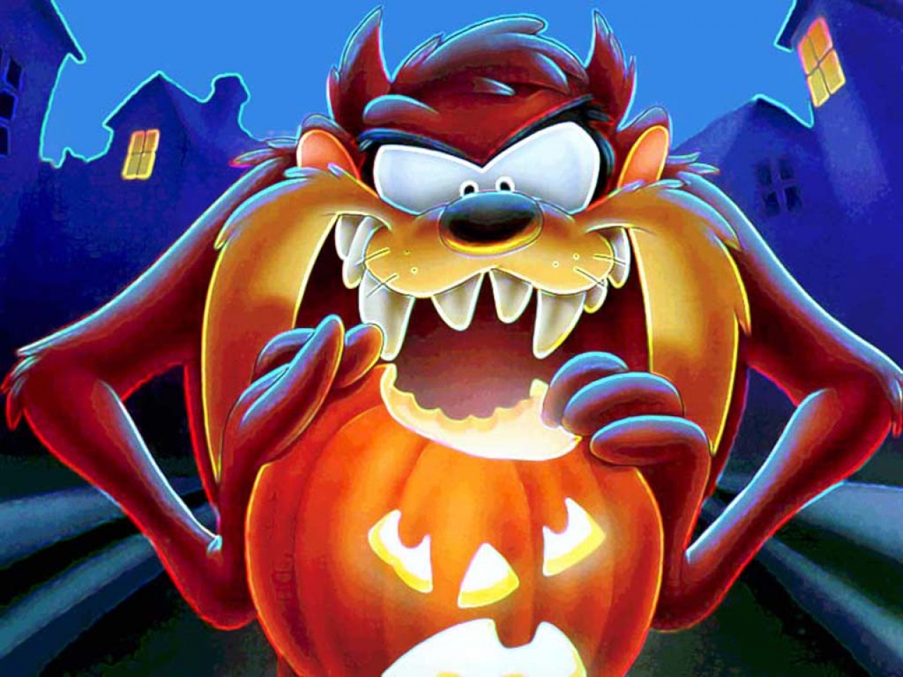

Nesto o Tasmanijskom djavolu
Tasmanijski đavo (lat. Sarcophilus harrisii) je vrsta torbara mesoždera sa Tasmanije. Jedini je živeći predstavnik roda Sarcophilus. Posle izumiranja tilacina, postao je najveći torbar mesožder u svetu. Ima crno krzno, a poznat je po glasnim i zastrašujućim kricima koje ispušta. Iz Australije je nestao pre više od 3 000 godina opstavši samo na Tasmaniji. Zbog pretnje stoci, bio je lovljen sve do 1941. godine, kada je stavljen pod zaštitu. Od kasnih 1990-ih, među tasmanijskim đavolima je sve zastupljeniji facijalni tumor, zbog čega je ova vrsta u opasnosti od izumiranja.
Njegovi Neprijatelji
Tasmanski đavo pripada porodici Dasyuridae. Rod Sarcophilus sadrži još dve vrste poznate samo iz pleistocenskih fosila, S. laniarius i S. moomaensis. Veza između te tri vrste nije jasna. Filogenetska analiza je pokazala da je tasmanski đavo daleki srodnik psoglavog tigra.
On se hrani
- vombate
- male sisare
- gmizavce
- ribe
- žabe